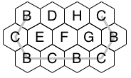
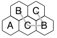
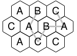
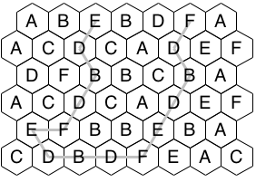
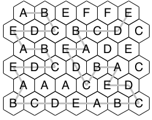
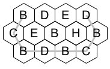
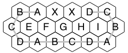

Judge's Notes for Bounce:
Data set 1 and 2 are in the problem figures
Data set 3: n=4: No solution. This shows a partial repeat BCBCBC does count as a repetition of a path of length 4.
Data set 4: n=4: shows also having a smaller possible pattern length (2) is OK.

Data set 5: n=2

Data set 6: n=3

Data set 7: n=5

Data set 8: n=5

Data set 9: no solution. This is the same as the previous pattern, but with an extra unreachable row at the bottom.
Data set 10: (n=3 "solution" BEDBED not allowed)

Data set 11: (path starts and ends with leftward steps in top row)
